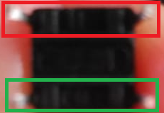
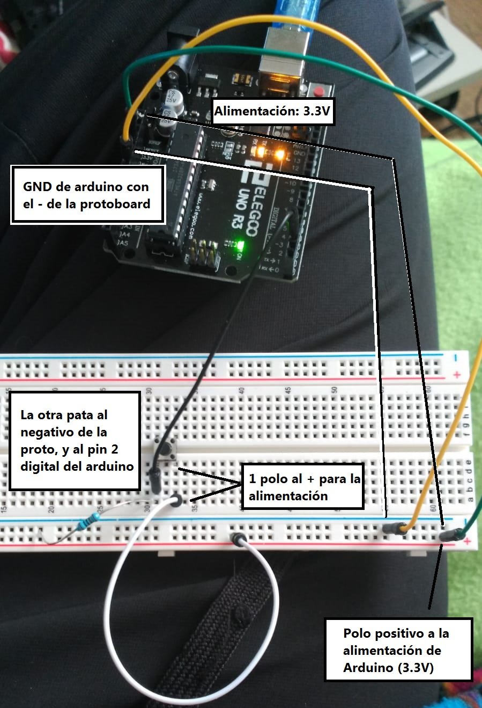
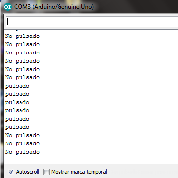

El pulsador tiene 4 patas pero se comporta como si tuviese 2 patas, una positiva y otra negativa. Tenemos que tener en cuenta como están conectadas estas patas.
Hacemos el siguiente circuito:
El código es el siguiente:
int PULSADOR = 2;
void setup() {
pinMode(PULSADOR, INPUT); // Poner el pulsador como entrada
Serial.begin(9600); // Para escribir en consola
}
void loop() {
if(digitalRead(PULSADOR) == LOW ){
Serial.write( "No pulsado");
}
if(digitalRead(PULSADOR) == HIGH ){
Serial.write( "pulsado");
}
Serial.print('\n');
delay(1000);
}
Obtenemos el siguiente resultado:
